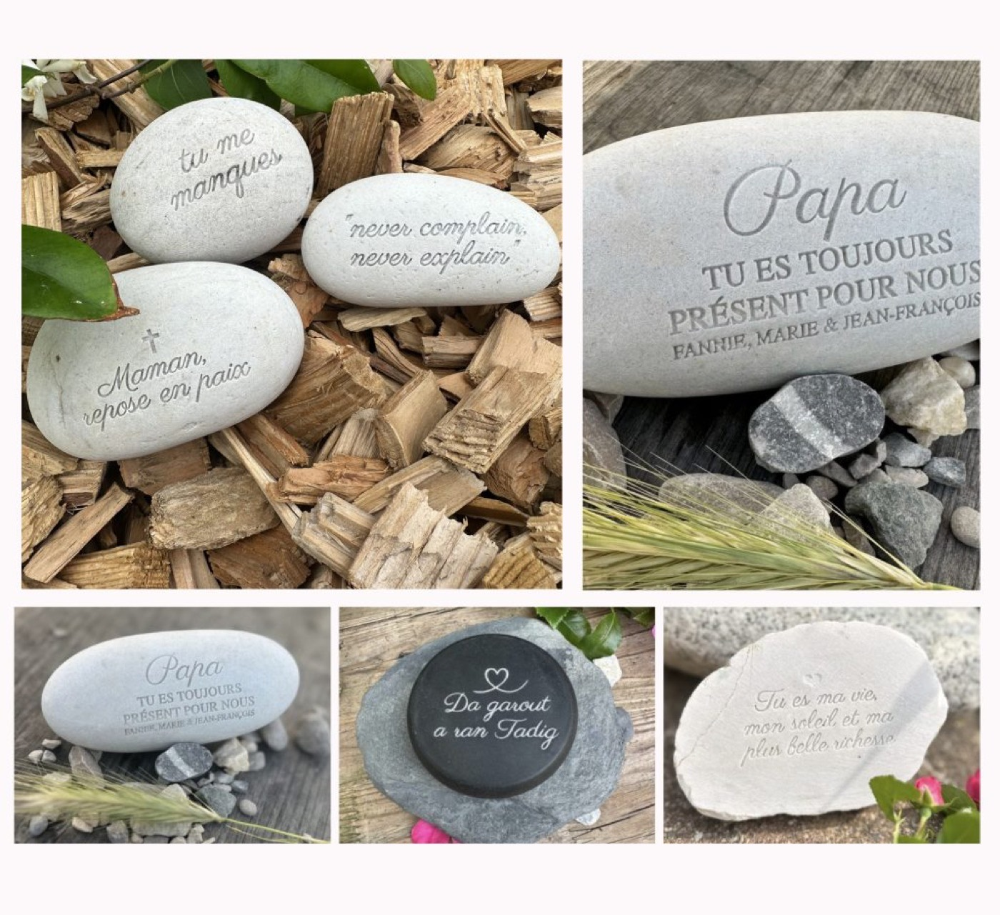

Un fragment de nature, témoin de l’éternité.
Le galet est bien plus qu’une pierre. C’est un élément façonné par les forces de la nature depuis des millénaires — poli par l’eau, le vent, les saisons. Il porte en lui la mémoire du monde, une force tranquille, discrète mais indestructible. Le choisir comme support de mémoire, c’est s’ancrer dans ce cycle naturel, universel et apaisant.

https://www.latelierinspire.fr/boutique/PIERRE-NATURELLE-c186582280
Un hommage intemporel gravé dans la pierre
Il y a des liens qui défient le temps. Des présences qui, même dans l’absence, continuent de vivre à travers les gestes, les souvenirs… et parfois, à travers un simple objet chargé de sens. Le galet personnalisé en pierre naturelle s’impose aujourd’hui comme un hommage doux et puissant, loin des artifices, proche du cœur.
Un objet intemporel, unique et personnalisé
Graver un prénom, une phrase, une date… c’est faire dialoguer la pierre et l’âme. Le galet personnalisé devient alors un objet intime, porteur de sens. Il traverse les années sans perdre sa beauté, sans s’altérer. Il ne se fane pas, ne rouille pas, ne casse pas : il reste. Discret et symbolique, il peut être déposé sur une tombe, conservé dans un jardin, un coin de maison ou même dans la main.
Chaque galet est unique. Sa forme, ses veines, sa couleur racontent déjà une histoire. La gravure, elle, y inscrit un lien, un souvenir, un amour. Ensemble, ils composent un hommage sincère, simple et fort.
Un geste de mémoire durable et apaisant
Dans un monde où tout passe vite, le galet ralentit le temps. Il invite à la contemplation, au recueillement.
Offrir ou s’offrir un galet gravé, c’est choisir une présence apaisante, silencieuse.
C’est dire “tu es toujours avec moi”, sans grands discours, avec la sobriété et la beauté de la pierre.